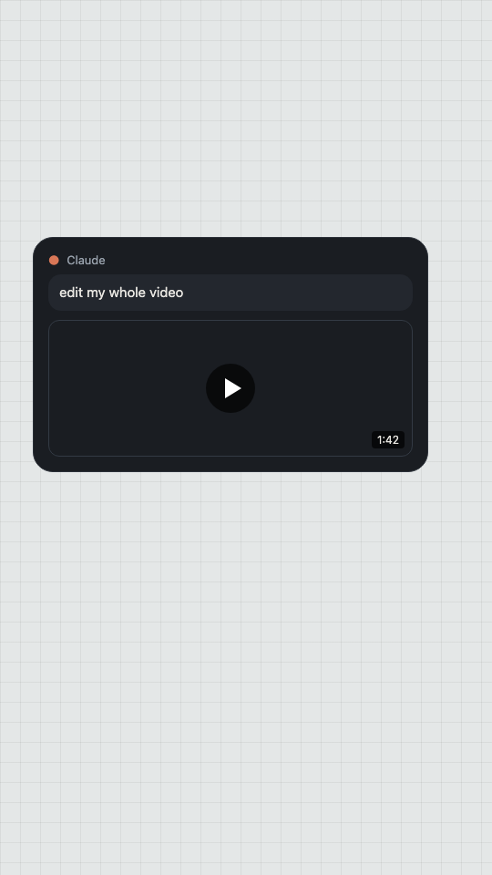
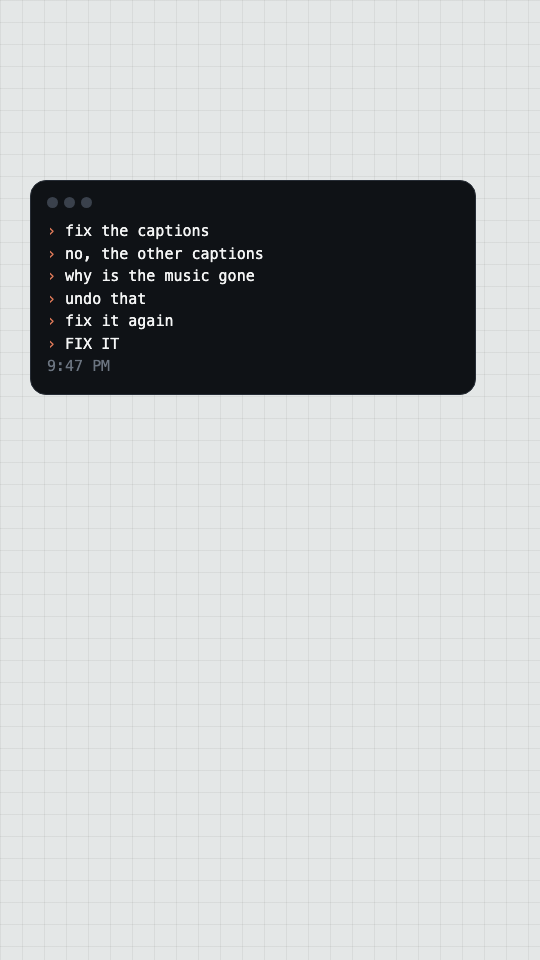
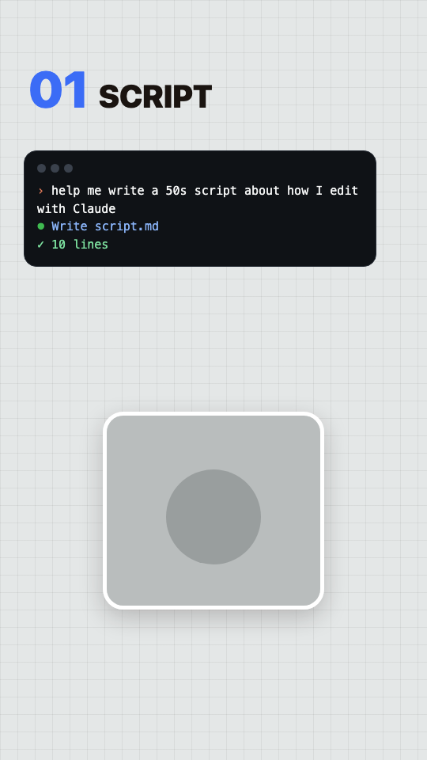
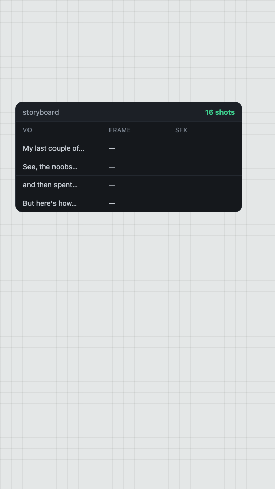
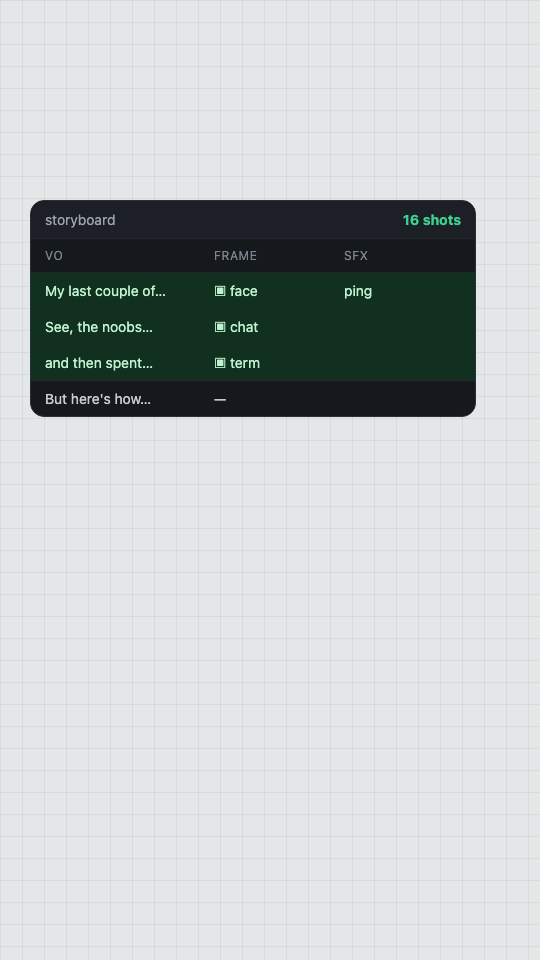
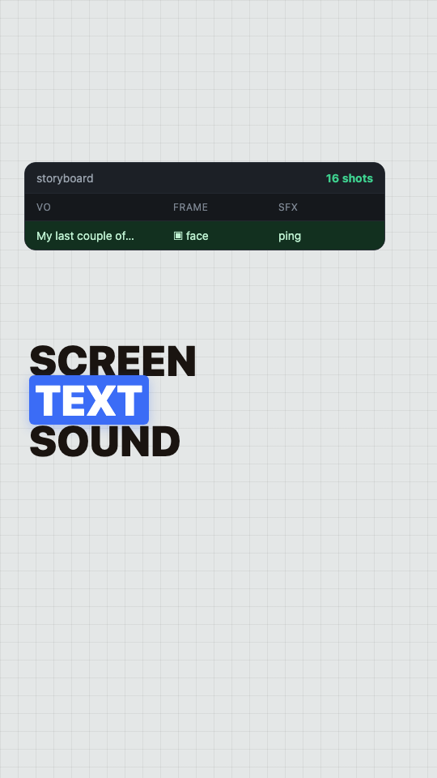
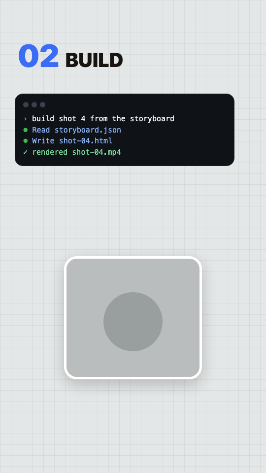
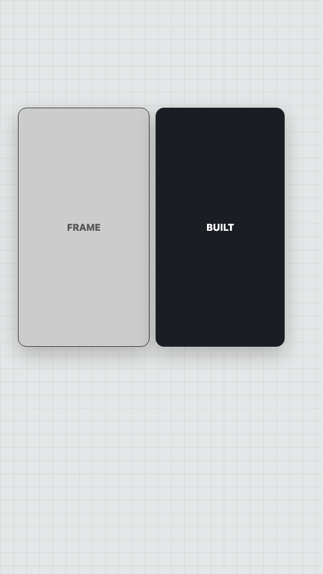
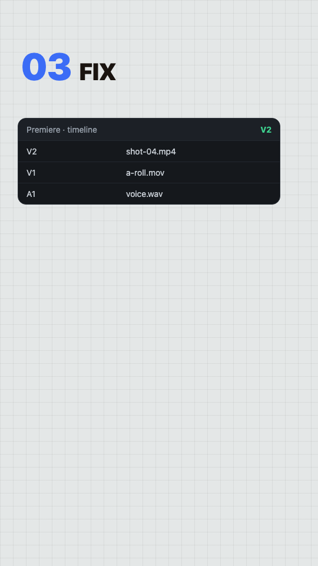
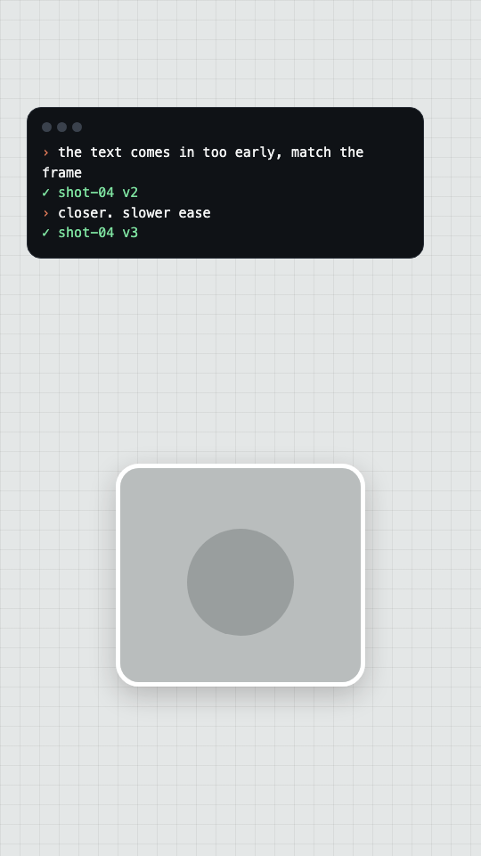

01 face 0.0s to 2.9s stand-in
My last couple of videos were all edited by Claude.
Text CLAUDE EDITS MY VIDEOS
Edit Mid shot to camera. Headline holds 4s.
SFX notification ping
My last couple of videos were all edited by Claude.
Text CLAUDE EDITS MY VIDEOS
Edit Mid shot to camera. Headline holds 4s.
SFX notification ping

See, the noobs would have just told Claude to edit the whole video in one prompt
Edit Claude chat: one message, 'edit my whole video', send.

and then spent the rest of the day trying to fix it.
Edit Fix requests pile up in the thread, faster and faster.

But here's how the pros do it.
Edit Close shot. Lean in.

First things first, you need a script. Take your time.
Text 01 SCRIPT
Edit Claude Code drafting script.md on top, face box below.

Cook it up and then throw it on the storyboard.
Edit The script lands on the board: one row per line.

Every single line of the script gets its own frame.
Edit Frames drop into each row, top to bottom.

What's on screen, what the text says and what the sound is.
Edit Push in on one row; ring the Frame, Text and SFX cells as they're named.
Because the storyboard is the prompt.
Edit Mid shot. Punchline on screen.

Second, you have Claude build out every graphic one at a time.
Text 02 BUILD
Edit Claude Code building shot 4 from the board, face box below.

Take your time, straight off that storyboard.
Edit Side by side: the frame, then the built graphic matching it.

Third, the first version is never right, so you throw it in Premiere
Text 03 FIX
Edit Premiere timeline, graphic on V2.

and go back and forth with Claude until it matches the frame, or something that you like.
Edit Premiere on top, two quick revisions swap in; face box below.
Then you render it, do your polish, your captions, your sound, and your color.
Edit Fast cuts: render bar, captions, audio meters, color wheels.
SFX render done chime

See the noobs just prompt it, but the pros storyboard it.
Edit Mid shot.
Comment storyboard and I'll send you my storyboard skill.
Edit Close shot. Keyword spoken, captions only.